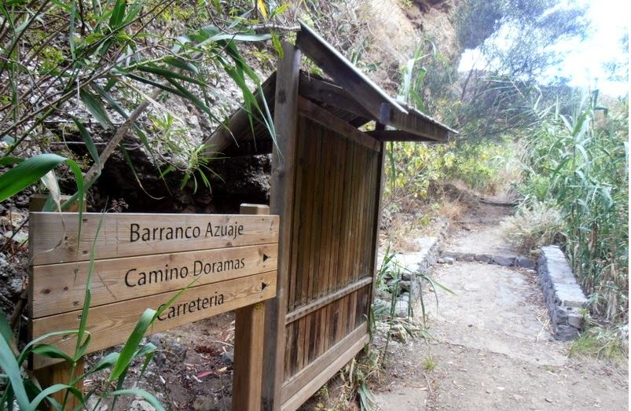
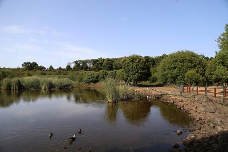

Las islas, de origen volcánico, se asientan sobre la Placa africana, como las ciudades
españolas de Ceuta y Melilla, aunque son parte de la región natural de la Macaronesia.
Esto junto a los archipiélagos de Cabo Verde, Azores, Madeira y Salvajes.
Canarias es el archipiélago más extenso y poblado de la región Macaronesia.Su clima es subtropical,
aunque varía localmente según la altitud y la vertiente norte o sur. Esta variabilidad climática da lugar a una
gran
diversidad biológica que, junto a la riqueza paisajística y geológica, justifica la existencia en Canarias de
cuatro parques
nacionales y que todas las islas tengan reservas de la biosfera de la Unesco,
y otras tengan zonas declaradas Patrimonio de la Humanidad.
Montañas
Tejeda - La Ventana del Bentayga.

Hay que aclarar que su nombre tradicional o etnográfico es Ventana o Jurada de Timagada
según los habitantes más longevos de la zona.
También es conocida como Arco del Aserrador por estar situada en la zona alta del Lomo del Aserrador, muy
próximo al barrio de Ayacata.
Lugar mágico de Gran Canaria.
Telde - Barranco de los cernícalos.

El Barranco de los cernícalos es considerado por muchos un oasis para el senderismo en
Gran Canaria.
Este es uno de los lugares más bonitos de Gran Canaria a los que se puede ir a caminar con toda la familia
sin apenas preocuparse.
Se trata de un sendero apto para casi todos los niveles, muy bien acondicionado y señalizado.
Firgas - Barranco de Azuaje circular.

Esta ruta recorre parte de la Reserva Natural Especial de Azuaje, dicha distinción nos
indica
que es un lugar con un entorno único por su flora y fauna.Lugar denominado también como Fuente Santa ya
que en las inmediaciones está el manantial que proveía de aguas mineromedicinales al balneario.
Valleseco - La Laguna de Valleseco.

Situada dentro del Parque Rural de Doramas, el Área Recreativa de La Laguna es una zona de
gran
belleza paisajística formada por una amplia caldera volcánica tapizada en su interior por vegetación
propia de la laurisilva.
Paseando por La Laguna se pueden observar los diferentes árboles que forman este bosque único en el mundo.